Qwen · llama.cpp · Windows
Qwen3.6 越狱版来了！Windows 本地部署 35B 模型｜llama.cpp 完整教程
本文按视频顺序记录如何在 Windows 上下载 llama.cpp 和 GGUF 模型， 整理运行目录、配置启动脚本，并通过本地 WebUI 与模型对话。
在 YouTube 观看本期视频开始前的准备
- 64 位 Windows 电脑。
- 足够的磁盘空间。视频选择的主模型约 15 GB，视觉文件约 899 MB，还要给解压文件和运行缓存留空间。
- 足够的系统内存。模型文件能下载下来，不代表一定能在电脑上顺利加载。
- 如果使用 GPU 加速，需要确认显卡品牌、显存容量和可用的驱动环境。
- 能够访问 GitHub 和 Hugging Face 下载页面。
这期教程部署的是什么
视频演示的是
HauhauCS/Qwen3.6-35B-A3B-Uncensored-HauhauCS-Aggressive。
模型以 GGUF 格式发布，可以使用 llama.cpp 在本机运行。
模型仓库标注为 35B 总参数、约 3B 激活参数的 MoE 模型，并支持文本和视觉输入。
本期教程使用 llama.cpp 自带的 llama-server，启动后通过浏览器访问本地聊天界面。
本地运行的优势是对话主要在自己的电脑中处理，不需要按次调用云端 API。不过模型文件很大， 下载、加载速度和生成速度都取决于硬件。
打开 llama.cpp 并进入下载页
-
打开官方 GitHub 仓库
浏览器访问 github.com/ggml-org/llama.cpp 。确认仓库所有者是
ggml-org，避免下载名字相似的第三方程序。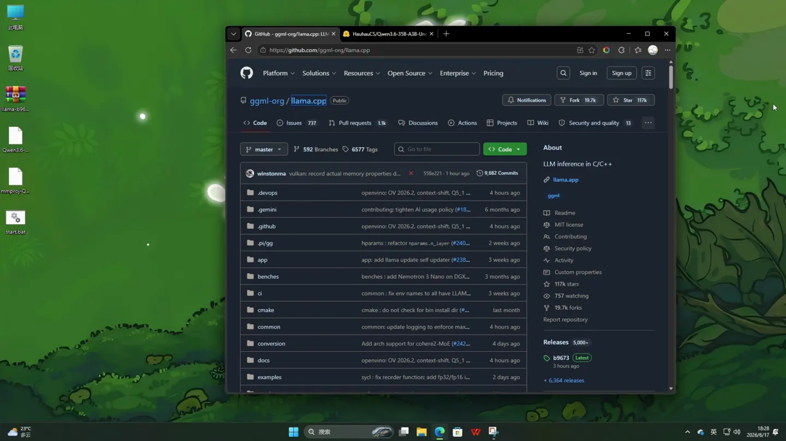
llama.cpp 是用于在本地运行 GGUF 模型的 C/C++ 推理工具。 -
进入 Releases
在仓库右侧找到 Releases，点击最新版本。 视频录制时使用的是
b9673。版本会持续更新，通常应优先选择当前最新稳定构建。 -
展开下载文件
在 Release 页面向下滚动到 Assets。 文件很多，必须先判断自己的系统架构和加速后端，不要随便下载第一个压缩包。
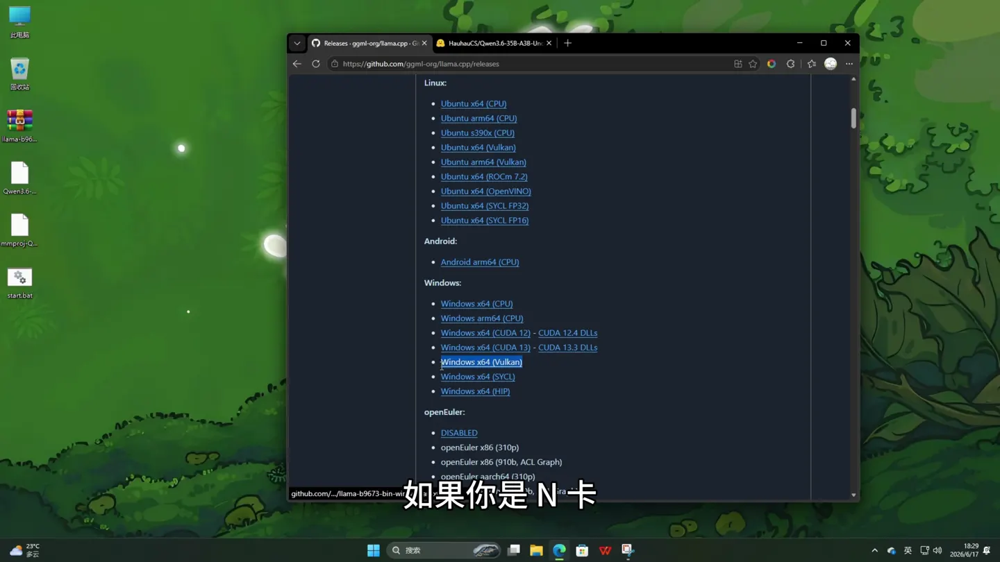
视频页面提供 CPU、CUDA、Vulkan、HIP 等不同 Windows 构建。
根据电脑选择 llama.cpp 构建
| 硬件情况 | 优先查看的构建 | 说明 |
|---|---|---|
| NVIDIA 显卡 | Windows x64 CUDA | 选择与驱动兼容的 CUDA 版本。视频使用 CUDA 13.3。 |
| AMD 显卡 | HIP 或 Vulkan | HIP 面向 AMD GPU；兼容性不确定时可查看 Vulkan 构建。 |
| Intel 或其他支持 Vulkan 的 GPU | Vulkan | 实际支持情况取决于显卡和驱动。 |
| 不使用 GPU | Windows x64 CPU | 可以运行，但 35B 模型通常会明显更慢。 |
-
视频选择 CUDA 13.3 x64
视频电脑使用 RTX 5070 Ti，因此点击 Windows x64 的 CUDA 13 构建， 下载文件名类似
llama-b9673-bin-win-cuda-13.3-x64.zip。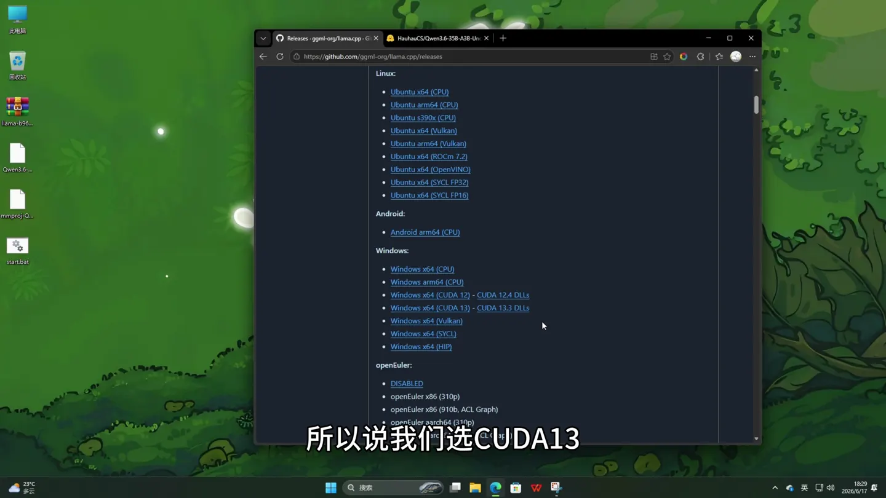
文件名中的构建编号会变化，以当前 Release 页面显示为准。 -
等待压缩包下载完成
下载完成后，把压缩包放到容易找到的位置。视频将它放在 Windows 桌面。
-
解压全部文件
右键压缩包，选择解压到独立文件夹。不要直接在压缩包预览窗口中运行
llama-server.exe，否则相关 DLL 和模型路径容易找不到。
下载 Qwen3.6 35B GGUF 模型
-
在 llama.cpp 文件夹中创建 models 目录
打开刚刚解压的 llama.cpp 文件夹，在根目录中新建文件夹，命名为
models。这个目录用来集中存放主模型和视觉投影文件。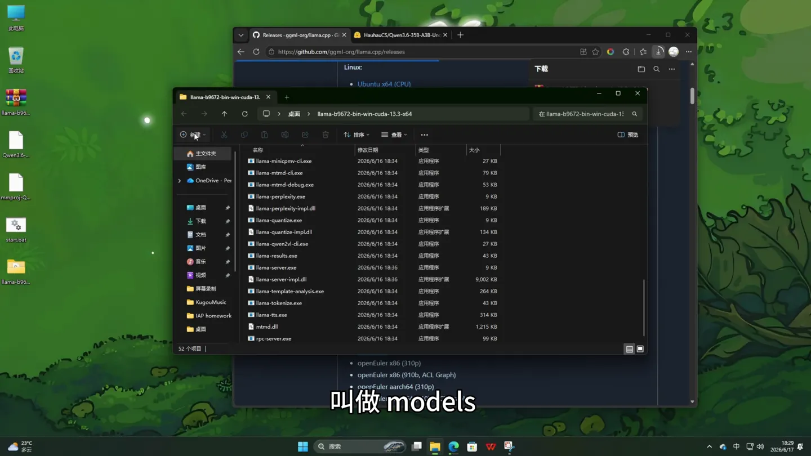
文件夹名称建议使用小写 models，后续脚本路径也按这个名称填写。 -
打开视频使用的模型仓库
访问 HauhauCS/Qwen3.6-35B-A3B-Uncensored-HauhauCS-Aggressive 。
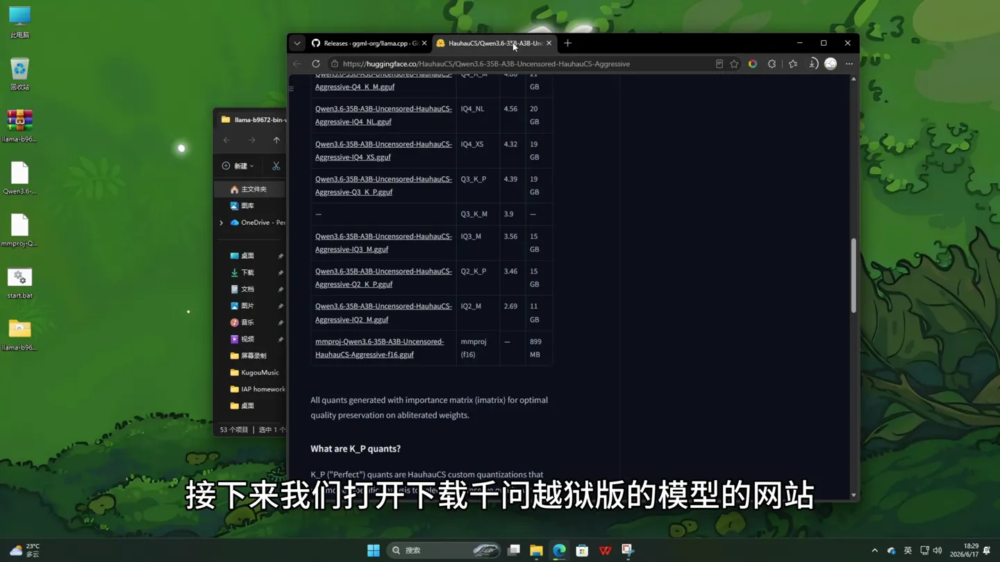
这是社区模型仓库，许可证和模型说明以仓库页面为准。 -
理解量化文件的区别
页面 Downloads 区域列出多个 GGUF 文件。量化越高，文件越大，通常质量越好， 同时需要更多内存。视频主要比较了以下两项：
IQ2_M：约 11 GB，资源占用较低，质量损失更明显。IQ3_M：约 15 GB，视频使用的版本。
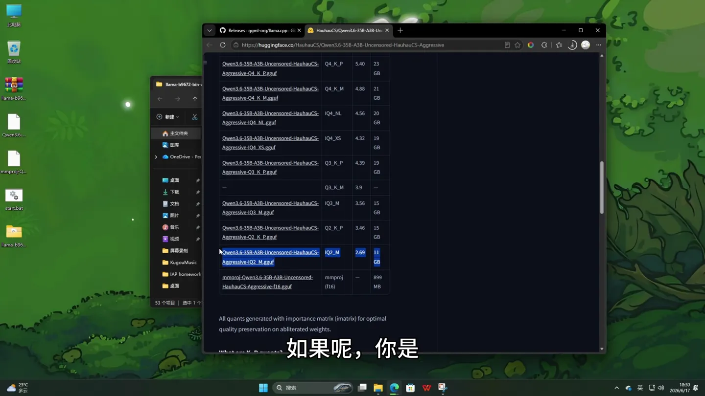
仓库还提供更大的 Q4、Q5、Q6 和 Q8 文件，不能只看显存决定。 -
在任务管理器查看显存
按 Ctrl + Shift + Esc 打开任务管理器， 进入 性能，点击左侧的 GPU。查看“专用 GPU 内存”总容量。
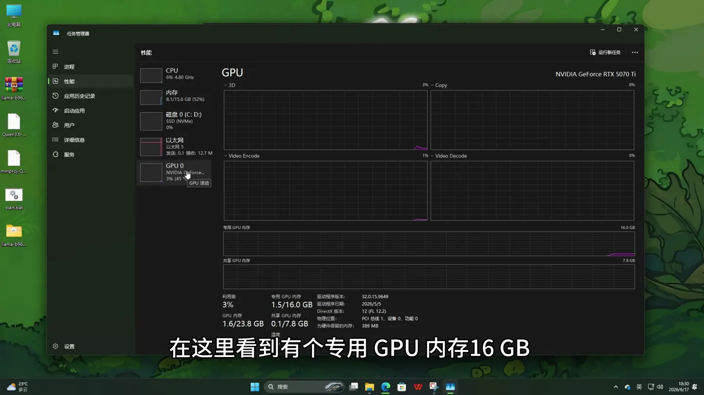
视频中的 RTX 5070 Ti 显示 16 GB 专用 GPU 内存。 -
根据总内存能力选择量化
视频建议 4 GB 或 6 GB 显存尝试约 11 GB 的 IQ2_M，8 GB 及以上尝试约 15 GB 的 IQ3_M。这依赖 CPU 分层和系统内存，不代表模型能全部装进显存。 内存不足时会加载失败，内存刚好够时也可能因为上下文缓存而崩溃。
如果不确定，先下载较小的 IQ2_M。确认能够稳定启动后，再考虑更高质量的量化。
-
下载视频使用的 IQ3_M 主模型
视频点击以下文件：
Qwen3.6-35B-A3B-Uncensored-HauhauCS-Aggressive-IQ3_M.gguf -
下载 mmproj 视觉文件
同一页面还要下载：
mmproj-Qwen3.6-35B-A3B-Uncensored-HauhauCS-Aggressive-f16.gguf该文件约 899 MB，用于图像等多模态输入。如果只打算文字对话，可以不启用视觉文件； 但要完整复现视频配置，应当一起下载。
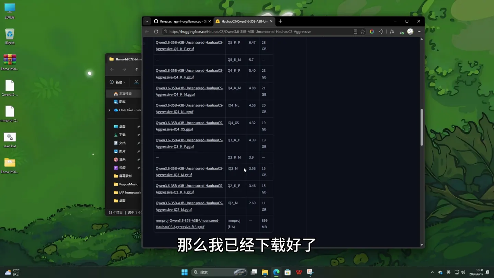
下载得到两个 .gguf文件：主模型和 mmproj。
整理模型和运行文件
-
把两个 GGUF 文件移入 models
回到 llama.cpp 解压目录，打开刚才创建的
models文件夹。 将 IQ3_M 主模型和 mmproj 文件一起拖进去。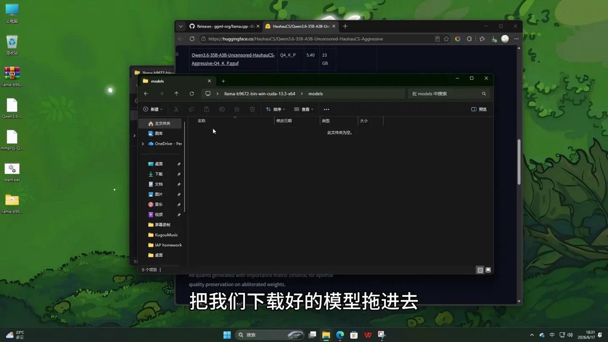
两个文件放在同一目录，后续脚本使用相对路径引用。 -
确认根目录中存在 llama-server.exe
返回上一层。根目录应该能看到
llama-server.exe以及随构建附带的 DLL。 如果只有模型文件，没有可执行文件，说明下载或解压的包不对。 -
把启动脚本放在根目录
视频将名为
start.bat的启动脚本放在 llama.cpp 根目录， 与llama-server.exe同级。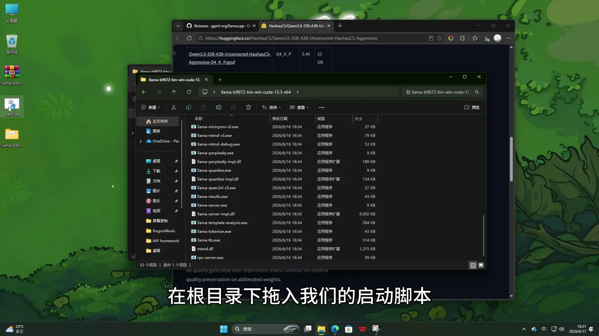
视频没有展示脚本正文，只展示了文件位置和双击运行过程。
llama-b9673-bin-win-cuda-13.3-x64/
├── llama-server.exe
├── start.bat
├── 其他 DLL 和程序文件
└── models/
├── Qwen3.6-35B-A3B-Uncensored-HauhauCS-Aggressive-IQ3_M.gguf
└── mmproj-Qwen3.6-35B-A3B-Uncensored-HauhauCS-Aggressive-f16.gguf创建可用的启动脚本
视频说明启动脚本会发布在评论区，但画面没有打开脚本内容。下面的脚本根据视频中可见的文件名、
127.0.0.1:8080、131072 上下文长度，以及模型仓库给出的 llama.cpp 参数还原。
它不是对视频脚本的逐字抄录。
-
新建 start.bat
在 llama.cpp 根目录空白处右键，新建文本文档。打开资源管理器的 查看 → 显示，启用“文件扩展名”，然后把文件重命名为
start.bat。 -
写入启动命令
右键
start.bat，选择编辑，写入以下内容：@echo off cd /d "%~dp0" llama-server.exe ^ -m "models\Qwen3.6-35B-A3B-Uncensored-HauhauCS-Aggressive-IQ3_M.gguf" ^ --mmproj "models\mmproj-Qwen3.6-35B-A3B-Uncensored-HauhauCS-Aggressive-f16.gguf" ^ --jinja ^ -c 131072 ^ -ngl 99 ^ --host 127.0.0.1 ^ --port 8080 pause -
按自己的文件名修改路径
如果下载的是 IQ2_M 或其他量化，必须修改
-m后面的文件名。 文件名需要与models文件夹里的实际文件完全一致。 -
显存不足时降低 GPU 层数
-ngl 99会尽可能把模型层卸载到 GPU。显存不足或启动时报 CUDA 内存错误时， 可以把它改为较小数字，例如-ngl 40，或者使用-ngl 0完全交给 CPU。数值越低，一般越慢。 -
内存不足时降低上下文长度
视频控制台显示上下文长度为 131072，即脚本中的
-c 131072。 这是很大的上下文，会额外占用内存。如果启动困难，可以先改成-c 32768或-c 16384，确认模型能正常运行后再调整。
启动 llama.cpp 本地服务
-
双击 start.bat
双击启动脚本。Windows 会打开命令提示符窗口，llama.cpp 开始读取 GGUF 模型。 第一次加载通常需要更久，不要在模型仍然加载时关闭窗口。
-
观察加载日志
正常情况下，窗口会持续输出模型结构、GPU 层、上下文和缓存信息。 视频加载完成后显示服务器监听地址：
http://127.0.0.1:8080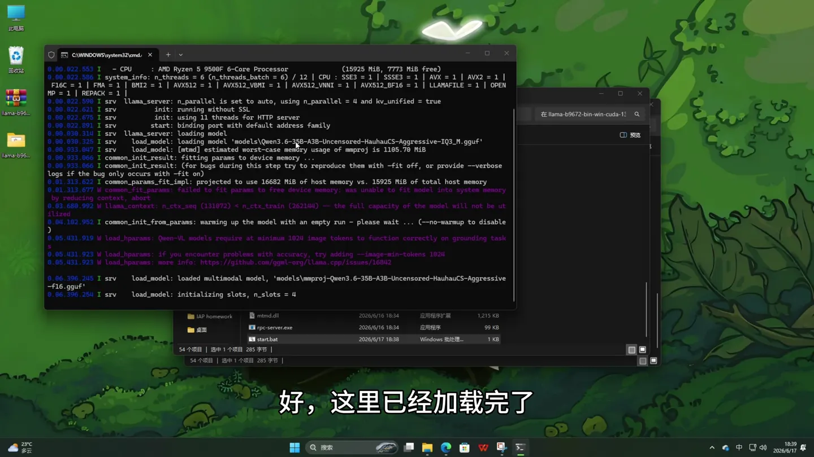
看到 server is listening on 之类的信息后，才说明 Web 服务已经可以访问。 -
保持命令窗口开启
命令窗口就是本地模型服务。关闭窗口会立即停止模型，浏览器页面随后无法继续生成回答。
在浏览器中打开 llama.cpp WebUI
-
复制本地地址
打开浏览器，在地址栏输入 http://127.0.0.1:8080 。这是回环地址，只能访问当前电脑上的服务，不是互联网网站。
-
确认聊天界面出现
页面打开后会显示 llama.cpp 自带的聊天界面。底部输入框附近可以看到当前加载的模型名称和量化。
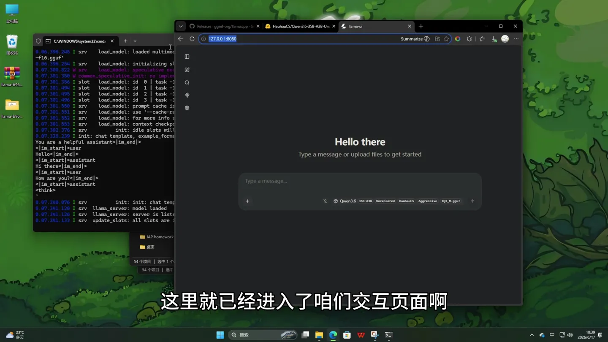
如果页面无法打开，先检查命令窗口是否仍在运行，以及端口是否被其他程序占用。 -
先发送简单测试消息
视频先输入“你好”，模型能够正常回复。用短消息测试可以快速判断模型是否加载成功， 不必一开始就提交长任务。
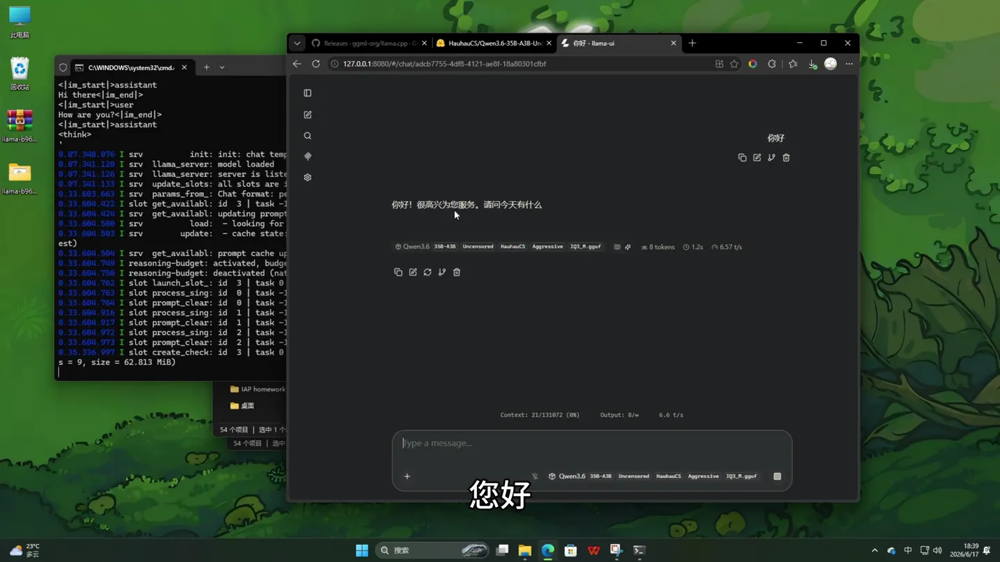
生成时命令窗口会同步显示提示处理和输出速度。
测试模型生成个人博客网页
-
输入网页生成要求
视频输入的核心要求是：开发一个个人博客主页，只使用 HTML。 模型随后生成一整段 HTML 代码。
-
等待代码生成完成
不要在模型仍然输出时提前复制。等代码块完整结束后，点击代码块右上角的复制按钮。
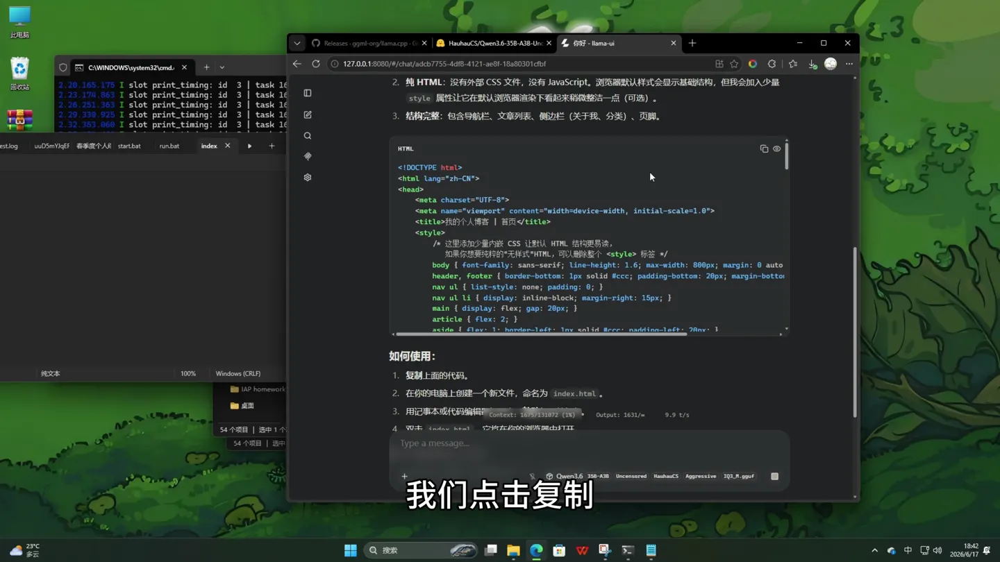
视频中的模型把 CSS 写在 HTML 的 style标签中，因此仍是单个 HTML 文件。 -
创建 index.html
在桌面新建文本文档，启用文件扩展名显示，把它重命名为
index.html。 Windows 提示更改扩展名可能导致文件不可用时，点击确认。 -
用记事本粘贴代码
右键
index.html，选择用记事本编辑。粘贴模型生成的完整代码， 按 Ctrl + S 保存。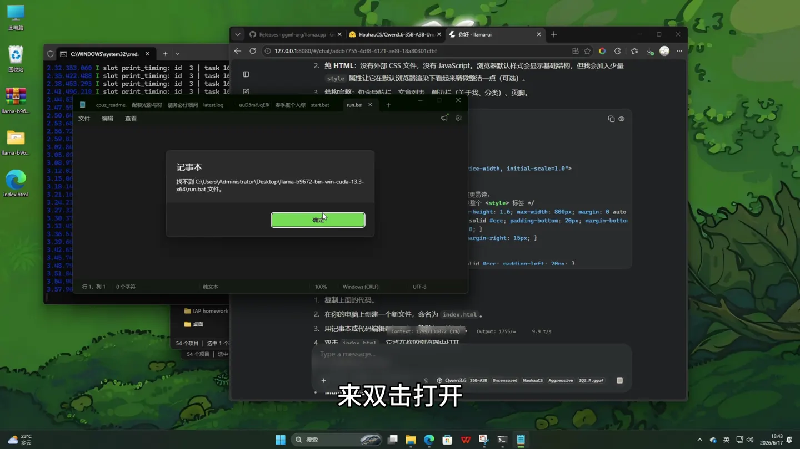
如果双击后仍显示纯文本，通常是文件实际名称变成了 index.html.txt。 -
双击打开网页
保存后双击
index.html。系统会用默认浏览器打开本地页面。 视频中的结果是一个包含标题、导航、文章列表和侧栏的个人博客主页。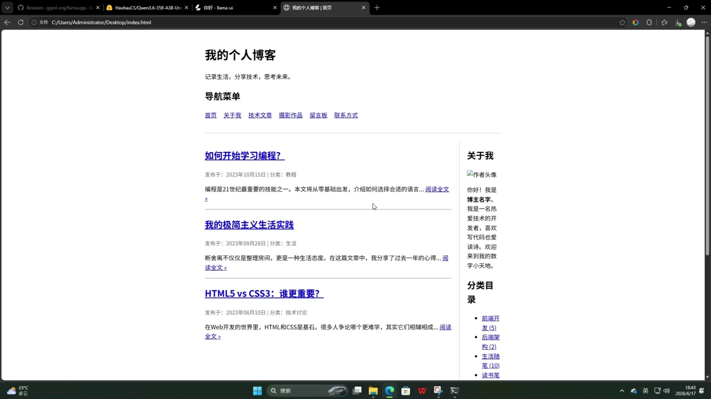
生成结果可以运行，但仍应检查代码质量、链接、移动端布局和安全问题。 -
视频最后的限制测试
视频随后用成人内容提示测试该 Uncensored 模型的拒答程度。这里不复述生成内容。 这个测试只说明该微调版本减少了部分内容限制，不能证明模型更准确或更适合实际工作。
常见问题
双击 start.bat 后窗口立即关闭怎么办？
在脚本最后保留 pause，重新运行后读取错误信息。最常见原因是模型文件名写错、
相对路径不对、缺少 DLL，或者下载了不适合当前硬件的构建。
提示找不到模型文件怎么办？
检查 models 文件夹名称、脚本中的文件名和实际 GGUF 文件名。
Windows 资源管理器应开启文件扩展名显示，避免文件名末尾藏着额外的 .txt。
出现 CUDA out of memory 怎么办？
降低 -ngl 数值，减小 -c 上下文长度，关闭占用显存的程序，
或改用更小的 IQ2_M 量化。显存不足时不要反复强行启动同一配置。
为什么 127.0.0.1:8080 打不开？
确认 llama-server 命令窗口没有关闭，并且日志已经显示监听 8080 端口。
如果端口被占用，可以把脚本改为 --port 8081，再访问
http://127.0.0.1:8081。
模型加载成功但生成特别慢怎么办？
查看命令窗口中的 token/s。模型可能大部分运行在 CPU，或者上下文设置过大。 使用较小量化、增加合理的 GPU 卸载层数，通常能改善速度。
mmproj 文件必须下载吗？
纯文字对话不是必须。要使用图片输入等视觉能力，才需要 mmproj，并在启动命令中加入
--mmproj 参数。
官方资料与相关链接
本文按 2026 年 6 月 19 日发布的视频整理。llama.cpp 构建编号、模型文件和下载页面可能更新。 下载可执行文件和模型前，应重新核对项目所有者、文件名、许可证和页面说明。